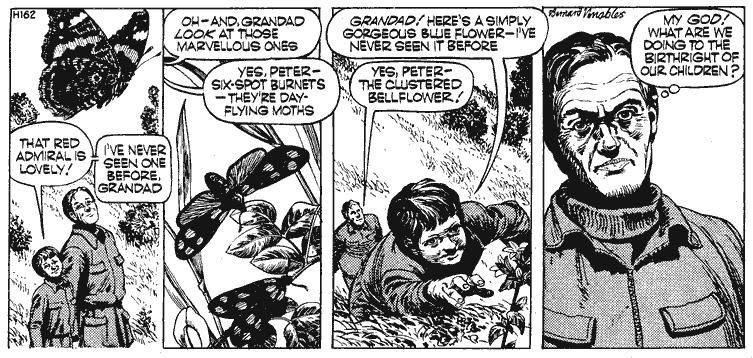
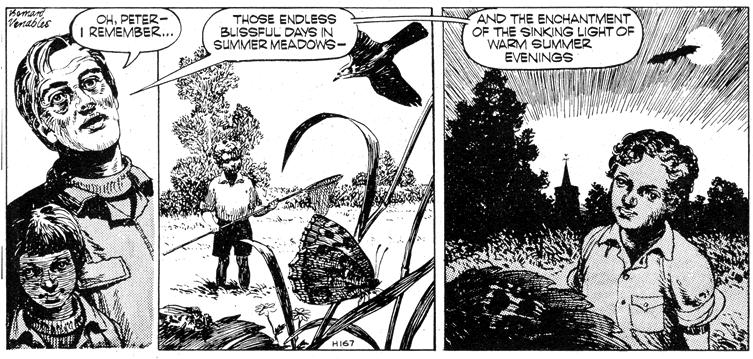

And now a direct from England - the world's most conscientious ecology cartoon feature. A little overstated for our American tastes, perhaps, but full of real meat, notheless. Ah, if we only had a cartoon series like this on our side of the pond! but, sincewe don't. MOTHER presents Mr. Crabtree Crusades. Man made rot is eating at the heart of nature. We are despoiling the heritage of our sons. Our Grandsons, and their grandsons.
The prehistoric ditch comes as a surprise and delight to Peter. Never before has Peter seen them, or the many other He has grown up so far in a world that has ceased to be able to butterflies that hover among the flowers in this, to him, show such things as he finds there. The downy black, white, and enchanted place. He did not know such flowers grew scarlet of the red admiral butterfly fascinates him. Then he sees wild as the clustered bellflower that he scrambles to pick. six-spot burnets, deep bottle green and red-spotted, that Mr. These things have been a birthright of children until we Crabtree remembers as a pleasure of drowsy mid-summer days. denied them that.
Peter's delighted fascination among the insects and flowers of the iron Age ditch recalls vividly to Mr. Crabtree the childhood world he remembers. He wishes fiercely that it should be that same world for Peter and all his generation and future generations. He tells Peter of summer meadows, woods, and stream banks where insects hummed and fluttered, and flowers grew, untouched by sprays or any other malignant work of man. Summer evenings, he recalls, had a soft warmth seldom coming now, which brought on the wing hosts of moths, bats, zooming beetles. Was this world, that had made magic of his childhood, to be entirely denied to Peter and those after him? Nature, given a chance, can still recover.
|
 |
 |
|